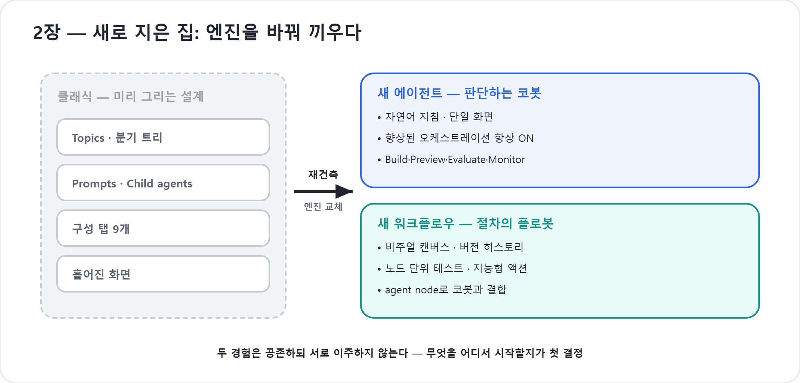

2장. 새로 지은 집 — 새 에이전트와 새 워크플로우
1장에서 우리는 “챗봇은 죽었다”고 선언했다. 그런데 한 가지 의문이 남는다. Microsoft는 왜 잘 돌아가던 Copilot Studio를 통째로 다시 지었을까? 버튼 몇 개를 옮기고 색을 바꾼 ‘UI 리뉴얼’이었다면 이 책을 새로 쓸 이유도 없었을 것이다. 핵심은 화면이 아니라 엔진이 바뀌었다는 데 있다. 이 장은 그 엔진 교체의 이유를 먼저 파헤치고, 그 위에 새로 올라선 두 채의 집 — 새 에이전트 경험과 새 워크플로우 — 을 차례로 둘러본다. 그리고 마지막으로, 클래식(옛 경험)과 신버전 사이에 벌어진 간극(gap)을 한 장의 지도로 정리한다.
이 장은 손으로 무엇을 만들지 않는다. 대신 신버전이라는 새집의 설계도를 머릿속에 넣는다. 이 지도를 쥐고 나면, 2부부터 시작되는 실제 빌드에서 “어, 그거 어디 갔지?” 하고 헤매는 일이 사라진다.
클래식은 무엇이 막혔나 — 미리 그려야 하는 설계의 한계
클래식 Copilot Studio의 세계관은 한 문장으로 요약된다. “모든 경로를 사람이 미리 그려 둔다.” 사용자가 어떤 말을 하면 어느 토픽(Topic)으로 들어가고, 어떤 조건에서 어떤 메시지를 띄우며, 언제 외부 액션을 부를지를 메이커가 노드와 분기로 설계했다. 잘 정의된 시나리오에서는 이 방식이 견고하다. 문제는 현실의 대화가 시나리오대로 흐르지 않는다는 데 있다.
| 클래식의 한계 | 현장에서 드러나는 증상 |
|---|---|
| 흐름이 깨진다 | 다단계 대화 중 예상 못 한 입력이 들어오면 토픽이 끊긴다 |
| 분기 폭발 | 복잡해질수록 노드·조건이 기하급수로 늘어 유지보수가 무너진다 |
| 도구 호출이 경직된다 | 언제 무엇을 부를지 메이커가 전부 미리 설계해야 한다 |
| 긴 작업이 안 된다 | “문서를 읽고 분석해 보고서를 써라” 같은 장기(long-horizon) 작업이 난항 |
마지막 항목이 결정적이다. 답하는 챗봇은 한 번의 질문에 한 번 답하면 끝이다. 그러나 일을 끝내는 동료는 여러 단계를 스스로 이어가야 한다. 자료를 찾고, 읽고, 표를 만들고, 검토하고, 파일로 내보낸다. 미리 그린 분기 트리로는 이 ‘끝까지 가는 일’을 담아낼 수 없었다. 클래식의 구조 자체가 천장이었던 셈이다.
에이전트가 무너지는 두 가지 방식 — 신뢰성의 진짜 문제
그렇다면 분기 트리를 걷어내고 모델에게 “알아서 끝까지 해”라고 맡기면 될까? 그렇게 간단하지 않다. 의욕만 앞선 신입에게 큰일을 통째로 던지면 흔히 두 가지로 무너진다 — 한꺼번에 다 하려다 지쳐 나가떨어지거나, 절반쯤 하고 “다 했습니다”라고 말해 버린다. 자율적으로 다단계 작업을 맡은 에이전트도 똑같다. 업계(Anthropic)가 진단한 두 실패 모드가 정확히 그 둘이다.
- ① 한 방에 쏟아붓다 소진된다(one-shot 소진). 작업을 한 번에 다 하려다 컨텍스트(작업 기억)를 중간에 다 써 버린다. 다단계 작업이 끊기고 미완성으로 끝난다. 게다가 컨텍스트가 한계에 가까워지면 모델은 ‘조급해져’ 일관성을 잃는다 — 이른바 컨텍스트 불안(context anxiety).
- ② 다 됐다고 거짓 선언한다(조기 완료). 진척이 조금 있으면 “완료했습니다”라고 선언해 버린다. 정작 핵심은 안 됐는데 대화를 닫는다. 모델에게 자기 결과물을 스스로 평가시키면 거의 항상 후하게 점수를 준다는, 잘 알려진 약점과 맞닿아 있다.
신버전이 말하는 ‘신뢰성’은 바로 이 두 실패를 막겠다는 약속이다. 그리고 그 약속은 화면이 아니라 새 AI 코어에서 나온다. 화면은 거들 뿐이다.
왜 이게 ‘UI 리스킨’이 아닌가 다단계·장기 작업의 안정성, 도구 선택의 정확성, 긴 대화에서의 지침 준수 — 이 세 가지는 버튼을 옮긴다고 생기지 않는다. 모델을 감싸 실행을 통제하는 런타임(코어) 을 새로 짜야 얻어진다. 그래서 이 변화는 리뉴얼이 아니라 재건축이다.
AI 코어를 다시 짓다 — 코딩 하네스 위의 오케스트레이터
신버전의 심장은 에이전틱 오케스트레이터다. 그리고 이 오케스트레이터는 업계가 이미 검증한 한 가지 패턴 위에 세워졌다 — 코딩 하네스(coding harness)와 CLI 레이어다.
하네스란 거창한 말이 아니다. 본디 말[馬]에 씌우는 마구(馬具)를 가리킨다 — 힘센 말에 안장과 고삐를 채워 사람이 부릴 수 있게 하는 장치다. AI에서도 똑같다. LLM(거대언어모델)을 실행 루프로 감싸, 모델이 도구를 직접 쓰게 만드는 런타임이 바로 코딩 하네스다. (여기서 CLI는 명령줄로 도구를 부리는 터미널형 조작 방식을 뜻한다.) 하네스는 거친 모델의 힘에 고삐를 채워, 모델에게 네 가지를 제공한다.
- 도구 접근 — 파일·셸·검색·API를 직접 호출
- 관찰 피드백 — 실행 결과를 다시 모델의 입력으로 되돌려 줌
- 반복 제어 — 판단 → 실행 → 관찰을 작업이 끝날 때까지 반복
- 컨텍스트 관리 — 무엇을 언제 보여줄지(그리고 언제 비울지) 결정
흥미로운 사실은, 가장 검증된 에이전트들이 약속이라도 한 듯 전부 이 ‘터미널형 코딩 하네스’로 수렴했다는 점이다. Anthropic의 Claude Code, GitHub의 Copilot CLI, OpenAI의 Codex CLI — 그리고 이제 Microsoft의 New Copilot Studio. New Copilot Studio는 이 같은 하네스 패턴을, 개발자 터미널이 아니라 업무용 에이전트 플랫폼으로 이식한 것이다.
그래서 신버전 코어가 강화한 능력은 클래식이 막혔던 지점과 정확히 거울처럼 마주 본다.
| 클래식이 막혔던 곳 | 신버전 코어가 강화한 것 |
|---|---|
| 예상 밖 입력에 흐름이 깨짐 | 정확한 도구·스킬 선택 + 적응적 재시도 |
| 노드를 일일이 그려야 함 | 재귀적 실행 — 복잡한 문제를 스스로 단계로 쪼갬 |
| 긴 작업이 중간에 끊김 | 장기 지시 준수 — 긴 세션 내내 원래 지침을 놓치지 않음 |
| 정보(텍스트)만 반환 | 리치 파일 생성 — 전용 컨테이너에서 Word·PPT·Excel·PDF 산출 |
마지막 줄이 이 책 부제 “일을 끝내는 AI 직원”의 기술적 근거다. 답을 ‘말’로 주던 봇이, 이제 결과물을 ‘파일’로 만들어 건넨다. (그 컨테이너 안에서 실제로 무슨 일이 벌어지는지는 부록 F에서 해부한다.)
새 에이전트 경험 — 한 화면에 모인 코봇
엔진이 바뀌자 코봇을 빚는 작업대도 새로 짜였다. 클래식이 토픽·지식·액션·설정을 서로 다른 방에 흩어 두었다면, 새 에이전트 경험은 이것들을 한 화면에 모았다. 그 핵심 성격은 네 가지다.
- 자연어 지침으로 시작한다. 새 에이전트는 분기 트리를 그리는 것이 아니라 “이 코봇은 누구이고 무엇을 하는가”를 말로 적는 것에서 출발한다. 토픽·트리거·노드 기반 대화 설계가 사라지고, 그 자리를 지침(Instructions)과 추론이 대신한다.
- 단일 작업 표면. 정체성·지식·도구·스킬·설정이 하나의 통합 화면에 함께 놓인다. 클래식처럼 메뉴를 옮겨 다니지 않아도, 어떤 구성요소가 어떻게 맞물리는지 한눈에 보인다.
- 향상된 오케스트레이션이 항상 켜져 있다. 클래식에는 ‘클래식/생성형’ 오케스트레이션을 고르는 토글이 있었지만, 신버전은 모든 에이전트가 강화된 런타임을 쓴다. 끌 수 없다. 그 깊은 추론이 특히 빛나는 곳이 Microsoft 365 데이터 위에서의 응답 품질이다.
- 검증과 관찰이 작성 루프 안에 있다. 화면 위쪽 네 개의 탭 — Build · Preview · Evaluate · Monitor — 이 그것이다. 만들고(Build), 바로 대화해 보고(Preview), 품질을 숫자로 재고(Evaluate), 배포 뒤를 지켜보는(Monitor) 흐름이 한 작업대 안에서 끊기지 않는다.
신버전인지 클래식인지 헷갈릴 때의 간단한 판별법: 왼쪽 내비게이션에 Topics·Knowledge·Actions·Settings가 따로 보이면 클래식, 위쪽에 Build·Preview·Evaluate·Monitor 네 탭이 보이면 신버전이다.
이 작업대를 화면 단위로 자세히 읽는 일은 5장(화면은 주장이다)에서 하고, 실제로 코봇을 빚는 일은 2부에서 시작한다. 이 장에서는 “코봇은 이제 한 화면에서, 말로, 항상 켜진 추론 위에서 만들어진다”는 큰 그림만 손에 쥐면 충분하다.
새 워크플로우 — 결정론의 무대가 새로워졌다
코봇이 ‘판단하는 동료’라면, 플로봇은 ‘절차를 어김없이 집행하는 동료’다. 신버전은 이 플로봇의 무대도 새로 지었다. 이름은 Workflows다. 기반은 Power Platform 자동화(Power Automate·Agent flows)와 같은 뿌리에서 나왔지만, 에이전트와 결합하도록 다시 설계된 새 에디터이며 신기능이 가득하다. 첫 만남이니 ‘무엇이 새로워졌는가’를 한눈에 모아 둔다 — 실제로 절차를 엮는 깊은 실습은 4부의 몫이다.
| 무엇이 새로워졌나 | 한 줄 설명 |
|---|---|
| 비주얼 캔버스 | 액션을 드래그해 잇고, ‘tidy up’ 버튼으로 한 번에 정렬. 좌우(가로)↔︎상하(세로) 읽기 전환, Ctrl+F로 액션 검색 |
| 버전 히스토리 | 모든 변경을 버전으로 보관 — 이전 버전으로 복원, 두 버전 비교, 미리보기. 색깔 메모를 붙여 “이게 그 버전”을 표시 |
| 노드 단위 인라인 테스트 | 전체를 저장·실행하지 않고 액션 하나만 즉석에서 테스트. 실패한 테스트는 고친 뒤 그 자리에서 다시 실행 |
| 지능형 액션(신규) | Classify(메시지·문서를 범주로 분류), Extract(문서에서 원하는 필드만 추출), Guard rails(안전 가드), Human review(사람을 루프에 넣어 승인·검토) |
| agent node / M365 Copilot node | 워크플로 한가운데에서 코봇(에이전트)을 부르거나 M365 Copilot을 호출 — 절차와 판단을 한 흐름에 엮는다 |
| 더 똑똑해진 기본기 | 일회성 prompt(재사용 템플릿이 아닌 그 자리용 프롬프트), if/else 다중 분기, 변수 한 액션에 통합 선언, for-each 병렬 실행 기본, 식이 막히면 Copilot이 표현식 생성 |
| 트리거 4종 | 수동(manual) · 일정(recurrence) · 이벤트(connector) · HTTP 요청 |
핵심은 두 가지다. 첫째, Extract·Classify·Human review 같은 액션은 예전이라면 ‘프롬프트를 직접 짜거나 커스텀 문서 모델을 만들어야’ 했던 일을, 가볍게 끼워 넣는 부품으로 바꿔 놓았다. 차량 매매 서류에서 차대번호·모델명을 뽑아 SharePoint에 저장하고, 중요한 서류는 사람이 “이 서류 맞습니까? 예/아니오”로 승인하게 만드는 흐름이 몇 개의 액션으로 완성된다. 둘째, agent node는 플로봇과 코봇을 잇는 다리다. 절차 한가운데에서 “여기서부터는 판단이 필요해”라고 코봇을 호출하고, 반대로 코봇이 “이건 늘 같아야 해”라며 플로봇을 부른다.
함정 — “새 Workflows = 옛 agent flow의 이름만 바뀐 것?” 아니다. 같은 자동화 뿌리에서 나왔지만, 통합 비주얼 캔버스·노드 단위 테스트·버전 관리·지능형 액션·agent node까지 갖춘 다른 물건이다. 옛 방식(agent flows)도 당분간 공존하되, 새 Workflows로 변환(convert)할 수 있다. 깊은 빌드는 4부에서 다룬다.
그래서 무엇이 무엇으로 바뀌었나 — 클래식 → 신버전 매핑
코어가 바뀌자 빌드 표면도 바뀌었다. 클래식에 익숙한 사람이 가장 먼저 “어, 그거 어디 갔지?” 하는 지점들을 한 표로 모았다. 이 표 하나가 이 장의 실질적 결론이다.
| 클래식(옛 경험) | New Copilot Studio | 메모 |
|---|---|---|
| Topics(토픽·분기 트리) | Skill + Workflows 조합 | 미리 그린 대화 트리 대신, 지침·스킬이 흐름을 이끌고 결정론적 절차는 Workflows로. 메시지 가로채기 같은 확장점은 향후 릴리스 예정 |
| Prompts(AI 프롬프트 도구) | Skill / agent node | 별도 ‘AI 프롬프트’ 기능은 사라짐. 에이전트에선 스킬로, 워크플로에선 agent node로 대체 |
| Child agents(인라인 자식 에이전트) | Connected agents + Skill | 부모 안에 갇힌 자식 대신, 독립 에이전트를 연결하거나 스킬로 재구성. 인터럽트·다중 의도에 더 강함 |
| Agent flows(옛 자동화) | Workflows(공개 미리보기) | 여전히 존재(옛 방식)하되, 신 Workflows로 변환(convert) 가능 |
| Triggers(에디터 안의 트리거) | Workflows의 트리거 | 에디터를 어지럽히던 트리거가 Workflows로 이동 — 수동·이벤트·일정·HTTP |
| 구성 탭 9개 | 4개(Build · Preview · Evaluate · Monitor) | Knowledge·Tools·Channels·Agents가 모두 Build 안 ‘components’로 통합 |
| 지침·지식·도구가 흩어진 화면 | 한 화면 통합 | 풀페이지 테스트에서 추론 과정(chain of thought)과 도구 호출까지 가시화 |
함정 — 가장 자주 듣는 오해 둘
- “토픽이 스킬로 바뀐 거죠?” → 절반만 맞다. 토픽은 스킬+Workflows 조합으로 흩어졌다. 판단이 필요한 부분은 스킬, 늘 같아야 하는 절차는 Workflows다.
- “오케스트레이션을 예전처럼 껐다 켤 수 있죠?” → 없다. 향상된 오케스트레이션은 모든 에이전트에 항상 적용된다.
두 경험은 ‘공존’하지만 ‘이주’하지 않는다
마지막으로, 실무에서 반드시 알아야 할 한 가지. 클래식과 신버전은 나란히 공존한다. 신버전은 강제 전환이 아니라 opt-in이다. 홈 화면에서 새 경험으로 들어가고, 다시 클래식으로 돌아올 수도 있다. 어느 쪽도 상대를 끄지 않는다.
그러나 결정적인 제약이 있다. 두 경험 사이에는 마이그레이션 경로가 없다. 클래식에서 만든 에이전트를 신버전으로, 또는 그 반대로 ‘옮길’ 수 없다. 아키텍처와 오케스트레이션 런타임이 근본적으로 다르기 때문이다. 그러니 무엇을 어디서 새로 시작할지를 처음에 결정하는 일이 중요하다. Microsoft 공식 가이드의 권고를 요약하면 이렇다.
| 이럴 때 | 권장 |
|---|---|
| 새로 시작하고, 향상된 추론·응답 품질을 원한다 | 신버전 |
| 자연어 지침 기반의 단순한 작성 모델을 원한다 | 신버전 |
| 특히 Microsoft 365 데이터 위에서 추론하게 하고 싶다 | 신버전 |
| 클래식으로 만든 기존 에이전트를 유지·확장해야 한다 | 클래식 |
| 토픽으로 대화 흐름을 한 단계까지 결정적으로 통제해야 한다 | 클래식 |
| 아직 신버전에 없는 특정 기능에 의존한다 | 클래식 |
이 책은 그 결정을 ‘신버전에서 새로 키운다’로 잡고 출발한다. (클래식이 궁금하다면 비교용으로 부록 A에 정리해 두었다.)
코봇 한마디
"겉옷만 갈아입은 게 아니라 심장을 바꿔 끼운 거예요. 그러니 토픽 같은 옛 장치를 찾지 말고, ‘무엇이 무엇으로 바뀌었나’ 표 한 장만 손에 쥐세요. 새집은 방이 둘이에요 — 판단하는 저(에이전트)와 절차를 지키는 짝꿍(워크플로). 저를 키우는 동안 이 지도가 계속 길을 알려줄 거예요!"
핵심 정리
| # | 요점 |
|---|---|
| 1 | 신버전은 UI 리뉴얼이 아니라 AI 코어(엔진) 재건축이다. 화면이 아니라 런타임이 바뀌었다. |
| 2 | 클래식은 ‘모든 경로를 미리 그리는’ 설계라 분기 폭발·장기 작업 불가라는 천장이 있었다. |
| 3 | 자율 에이전트는 one-shot 소진과 조기 완료 선언 두 방식으로 무너진다. 신버전의 ‘신뢰성’은 이 둘을 막겠다는 약속이다. |
| 4 | 새 코어는 업계가 수렴한 코딩 하네스 + CLI 패턴 위에 섰다(Claude Code·Copilot CLI·Codex CLI와 한 계열). |
| 5 | 새 에이전트 경험: 자연어 지침·단일 화면·항상 켜진 향상된 오케스트레이션·4탭(Build/Preview/Evaluate/Monitor). |
| 6 | 새 워크플로우: 비주얼 캔버스·버전 히스토리·노드 단위 테스트·지능형 액션(Classify/Extract/Guard rails/Human review)·agent node. |
| 7 | 매핑: 토픽→스킬+Workflows, Prompts→스킬/agent node, child agent→connected agents, 9탭→4탭. |
| 8 | 클래식과 신버전은 공존(opt-in) 하되 상호 이주는 불가. 무엇을 어디서 시작할지가 첫 결정이다. |
자주 묻는 질문(FAQ)
| 질문 | 답변 |
|---|---|
| 그럼 클래식으로 만든 봇은 버려야 하나요? | 아니다. 클래식 에이전트는 계속 동작하고 편집된다. 다만 신버전으로 옮길 수는 없으니, 새로 시작하는 일은 신버전에서 키우길 권한다. |
| 토픽으로 짠 정교한 대화 흐름이 아까운데요? | 그 흐름은 두 곳으로 나뉜다. 판단이 필요한 대화는 지침+스킬이 더 유연하게 대신하고, 늘 같아야 하는 절차는 Workflows가 정확히 재현한다. |
| 새 Workflows는 Power Automate와 같은 건가요? | 같은 Power Platform 자동화 뿌리에서 나왔지만, 에이전트와의 결합(agent node·지능형 액션)과 새 에디터 기능이 다르다. 세부는 4부(13~15장)에서 다룬다. |
| ‘향상된 오케스트레이션’을 끄고 예전처럼 쓰고 싶어요. | 신버전에선 끌 수 없다. 그 동작이 곧 신버전의 정체성이다. 결정론이 꼭 필요한 부분은 Workflows로 분리하는 것이 바른 길이다. |
| 이 ‘하네스’ 이야기를 꼭 알아야 코봇을 키우나요? | 몰라도 키울 수 있다. 다만 코봇이 ‘왜 이렇게 행동하는지’가 보이면 디버깅과 설계가 쉬워진다. 더 깊은 런타임 해부는 부록 F에 있다. |
다음 장에서는
신버전이라는 새집의 설계도를 손에 넣었다. 방이 둘이라는 것도 보았다 — 판단하는 코봇과 절차를 지키는 플로봇. 3장은 그 두 방 사이의 갈림길에 선다. Copilot Studio를 열었을 때 마주하는 단 하나의 질문, “무엇을 만들 것인가 — Agent냐 Workflow냐”에서 출발해, 내 일은 어느 쪽인지 가르는 첫 기준을 손에 쥔다.
실습 — 코봇 키우기 2단계 (종이 실습): 클래식 사고를 신버전 사고로 옮긴다

〔이어받기〕 아직 아무것도 만들지 않는다. 머릿속과 종이 위에서, 옛 사고를 새 사고로 갈아 끼우는 실습이다.
2-a. ‘옛 장치’를 찾아 적는다. 내가 클래식이나 다른 챗봇 도구에서 만들었던(혹은 만든다고 상상하는) 봇 하나를 떠올려, 그것이 의존하던 옛 장치를 적는다 — 예: “인사 토픽”, “휴가 신청 프롬프트”, “자식 에이전트로 붙인 FAQ”.
2-b. 매핑표로 옮긴다. 본문의 클래식 → 신버전 매핑표를 보며, 위에서 적은 각 장치가 신버전에서 무엇이 되는지 오른쪽에 적는다 — 토픽 → 스킬+Workflows, 프롬프트 → 스킬/agent node, 자식 에이전트 → connected agents.
2-c. 두 방에 나눠 담는다. 내 업무 하나를 골라, 그 일을 판단(코봇)이 필요한 부분과 늘 같아야 하는 절차(플로봇)로 두 칸에 나눠 적는다. 예: ‘리스크를 판단해 맞춤 보고’는 코봇, ‘매주 금요일 보고서를 정해진 양식으로 발송’은 플로봇.
〔성장〕 코봇은 아직 없다. 그러나 머릿속의 지도가 클래식에서 신버전으로 갈아 끼워졌다. 이제 “토픽 어디 갔지?”가 아니라 “이건 스킬, 저건 워크플로”로 생각한다. 〔검증 포인트〕 내 업무 하나를 판단과 절차로 갈라 어느 방에 둘지 설명할 수 있으면 통과.